Grass, rock and seventy-nine thousand trees
Until today the ground was flat colour and nothing grew on it. This entry is the look of the land carried over from Thornwake: not a new look made with Unreal's tools, but the original's own rules, because Tom set the order of work plainly: first a remake as close to the original as possible, and only then whatever Unreal can add.
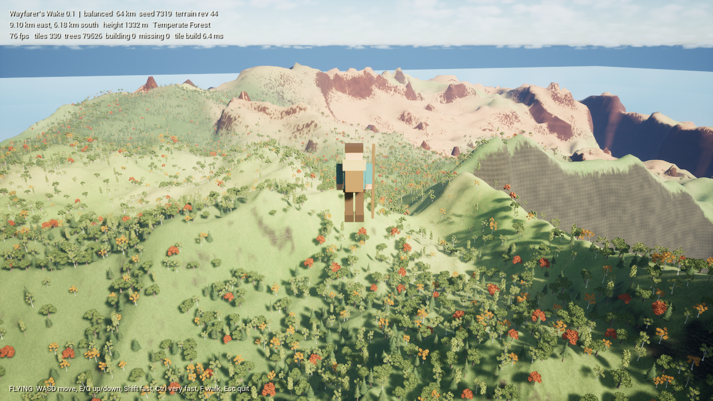
The ground
Thornwake colours its ground in one long shader: grass that shifts between a fresh and a dry colour, a darker floor under forest, rock wherever the slope is steep, loose scree under cliffs, sand along the sea, mud and gravel on river banks, peat in wetland pools, snow by temperature. All of that is now in the Unreal material, with the same numbers. The rock uses Thornwake's own pixel-art rock texture, laid on from the sides so cliffs show layers.
The trees
Trees are not scattered at random. The world is divided into cells seven metres across, and each cell either holds one tree or none, decided from the seed, the forest cover, the biome, the height and the slope. So the same tree stands in the same place every time, on every machine. Near trees use the full models; farther ones a simpler model; beyond a kilometre and a half the ground itself takes the colour of a canopy.
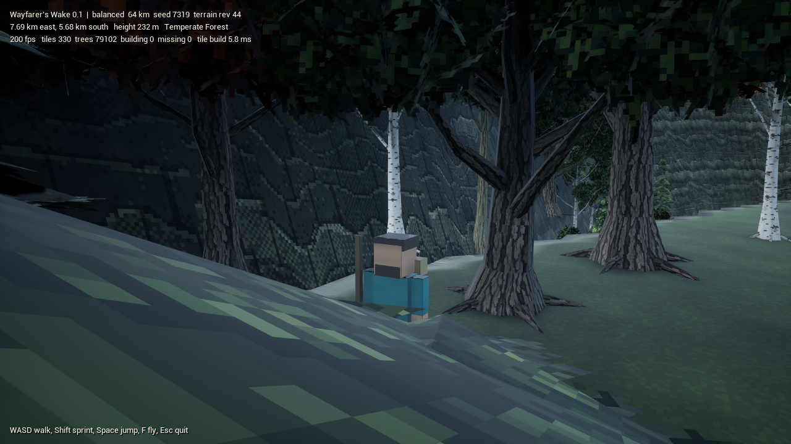
What went wrong on the way
The first forest was grey: the imported tree materials were not prepared for being drawn thousands at a time, and Unreal quietly swapped in its default. The first pictures after that were almost black, because an exposure setting worked the opposite way from what was assumed. And for a while every picture from the air showed nothing but a rock wall. Part of that was a test switch that ignored the camera angle it was given; the rest was the land itself, a glacial valley with sides far steeper than expected. Tom spotted the same faulty switch from his side, as a loading screen that never ended.
Later: Tom plays it, and a second opinion from Godot
Tom's verdict on the first build was short: too bright, washed out, and the ground not like the original. He also asked for the tool he relies on in Thornwake, a key that saves a picture and a page of facts about the moment. That is F9 now. Better still, his own Godot dumps were on the same computer, hundreds of them, each with the exact place, hour and camera. Starting this game at one of those places gives the same river at the same height to the millimetre, which is the generator doing its job, and a picture that could be held against the original.
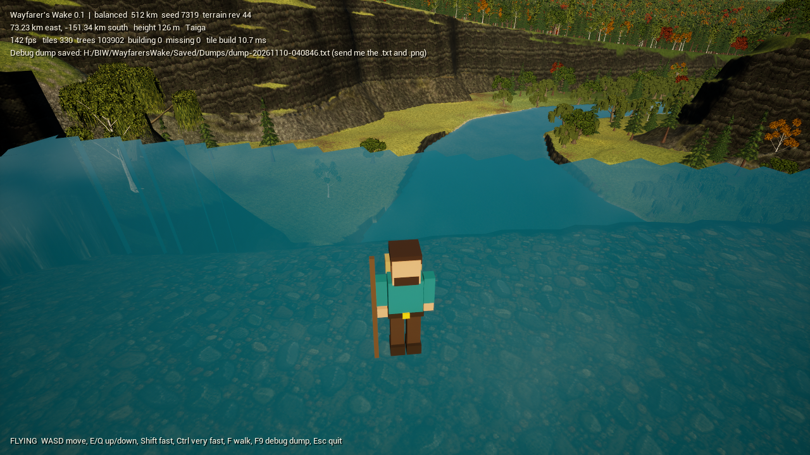
The comparison showed what was missing most: Tom plays with the ground textures made by Noor, an AI and a friend of his, which had been left out as an optional extra. They are in now, sixteen of them, along with a correction that brings the brightness down to the original's.
And then grass
Thornwake does not sprinkle grass evenly. It grows in patches with characters of their own: short grass with the odd tall tuft, thick lush grass, a stand of tall grass, grass with wild wheat, wet meadow; reeds and cattails in clumps along still water, lily pads in rafts, eelgrass on the river bed. All of that came over with its 28 pixel-art sprites. Around the player there are now about a third of a million plants.
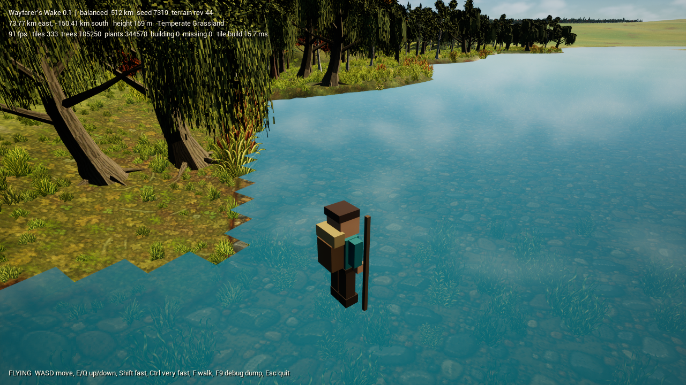
And water that runs
Thornwake's water is its largest piece of drawing code, and only the inland half has crossed so far. The surface is now one sheet that slips under the banks, so the waterline is where water meets ground. Every river knows its current, from how steeply it falls and how deep it is: ripples ride downstream, fast water breaks into white streaks from Tom's own foam textures, the shallow margins churn, and the bed shows through where the water is clear. Lakes get wind ripples. The sea, for now, is a very large lake.
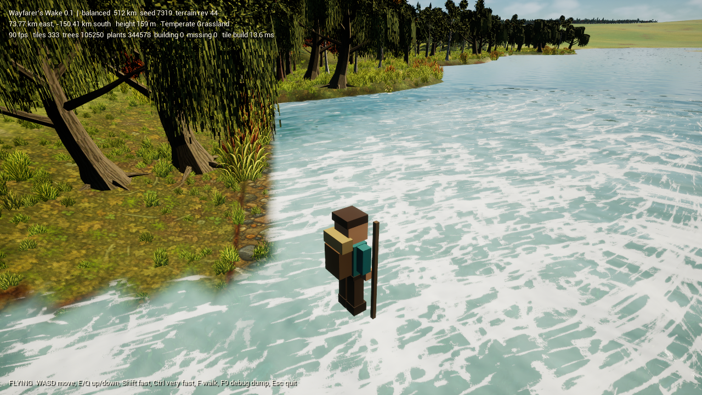
And water that falls
Wherever a river drops three metres or more in a short run, Thornwake treats it as a waterfall: the river's surface is cut away at the face, and a curtain of falling water is hung there instead, leaving the lip at the river's speed, falling freely or sliding down the rock, turning white as it picks up air, and spreading as churned water on the pool below. The test world has 275 of them. Seen from above the lip, it now looks very like the same spot in the Godot game.
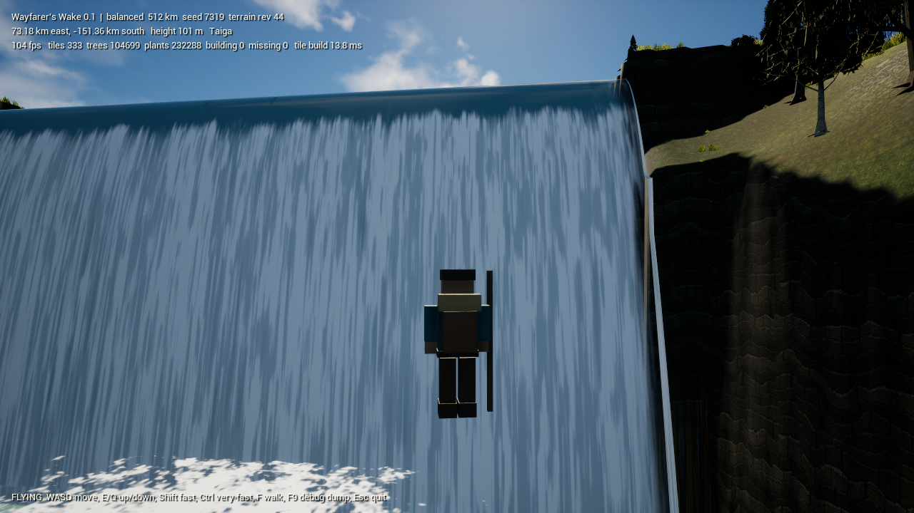
Later still: rock, wind and a swim
Tom asked for everything still missing, in order. Five things landed. Spray now billows at the foot of every waterfall. Stones, boulders, bushes, stumps and logs lie where Thornwake's rules put them, and stones stand in the rivers. Tall cliffs are dressed with worn blocks of layered rock, and outcrops of columns, slab stacks and tors stand on the hilltops: Thornwake has no model files for any of these, it sculpts them from formulas, and so does this game now, when it starts. Grass and tree crowns lean and swing in gusts that sweep across the land. And the explorer swims instead of walking along the river bed, and can no longer walk through a tree.
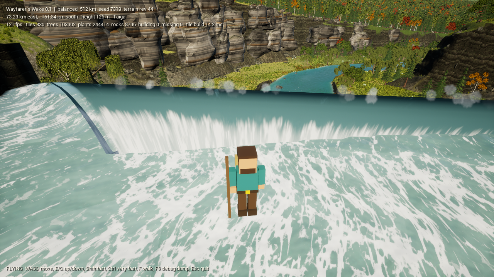
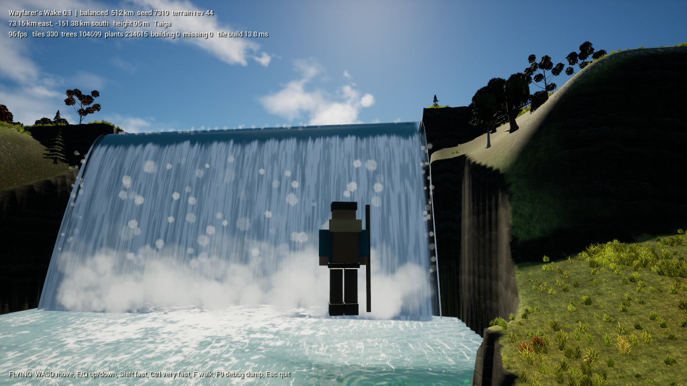
And then the sea
Until now the sea was a rippled lake. Thornwake's sea is a simulation: thousands of waves of every length added up afresh for every frame, the long swell and the wind's chop together, with white water born where a crest folds over. The Godot game does the sums on the graphics card. Here they run on the processor's spare threads, in about three thousandths of a second. The first test asked for waves 3.97 metres high and got 3.96.
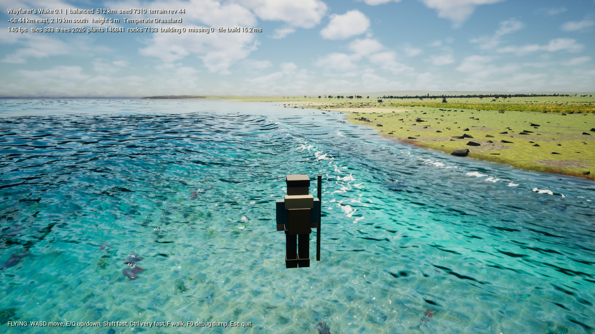
Near land the waves turn to face the shore, steepen as the water shallows and break, leaving a trail of foam; the last of each one runs up the sand. Round rocks the water churns white. And Alden, swimming, now rises and falls with the swell.
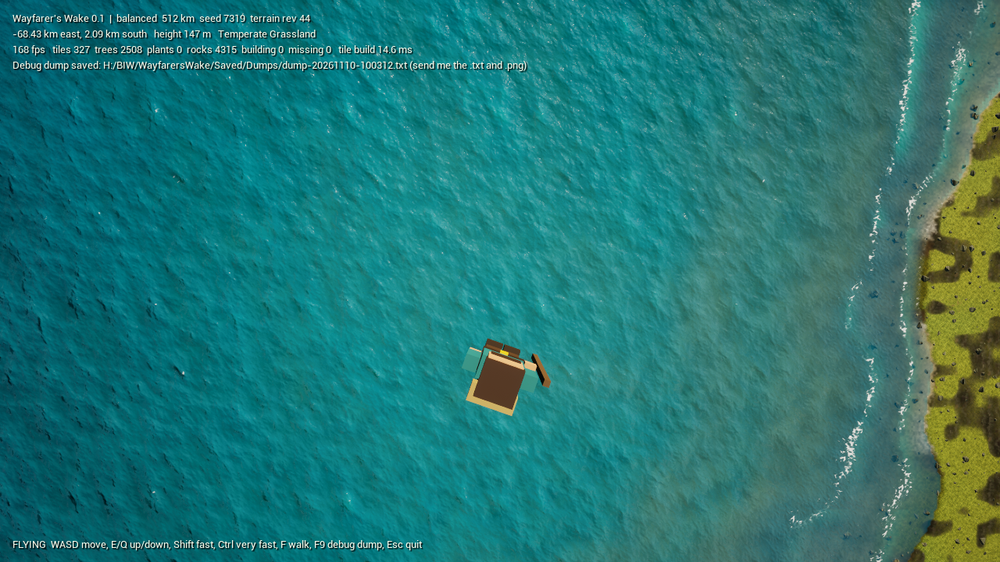
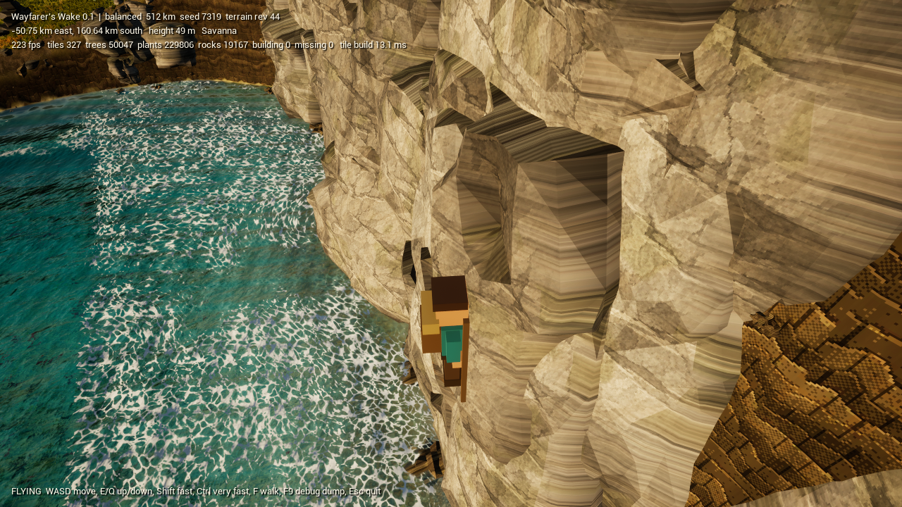
The shadows that were not there
Tom played the new build and saw at once what I had missed for four rounds: nothing cast a shadow. His clue cracked it: shadows flashed for a split second after the loading screen, then went. They went at the moment the far-away ground arrived. The engine keeps a tree-shaped index of everything in the scene to find what can cast a shadow, and with pieces of ground kilometres wide in it, that index came back empty. Asking every piece directly instead brought all of them back.
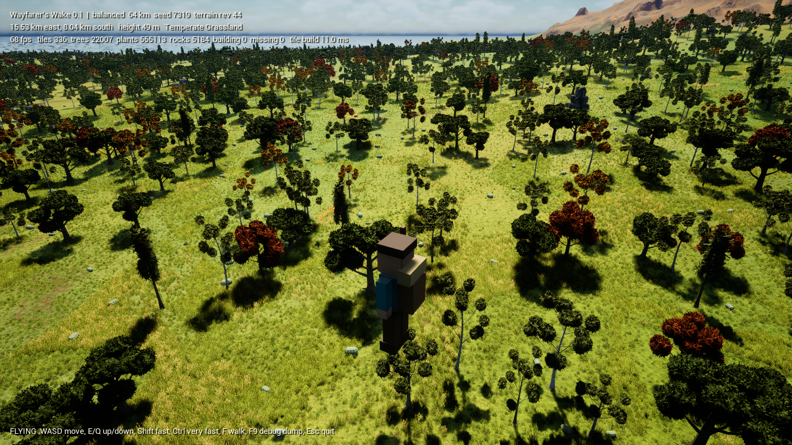
Under the surface
Dive, and the world changes colour. Red light dies first in water, so things a few metres off fade into blue-green; rivers are greener and murkier than the sea. Look up and the sky shows through a round window in the surface, with the dark water mirrored around it. Sunlight comes down in shafts, bent by every wave above, and lays a moving net of light on the bed. In the sea that net is drawn by the very waves the simulation made.
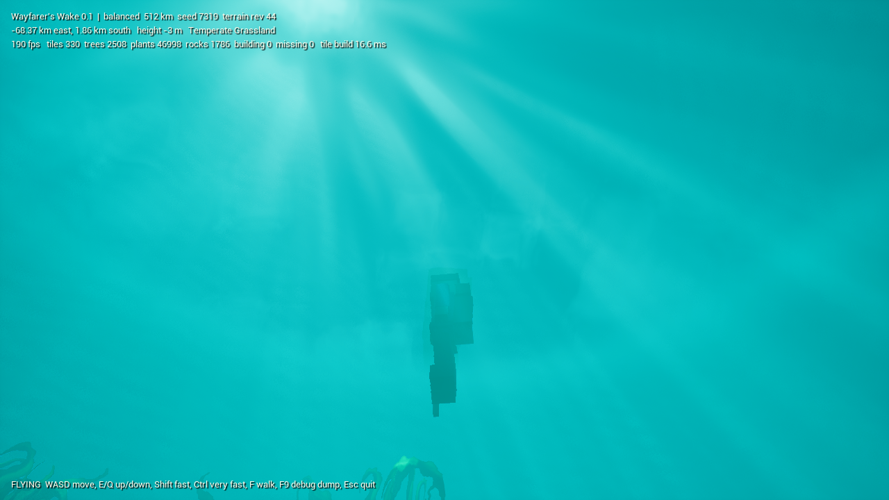
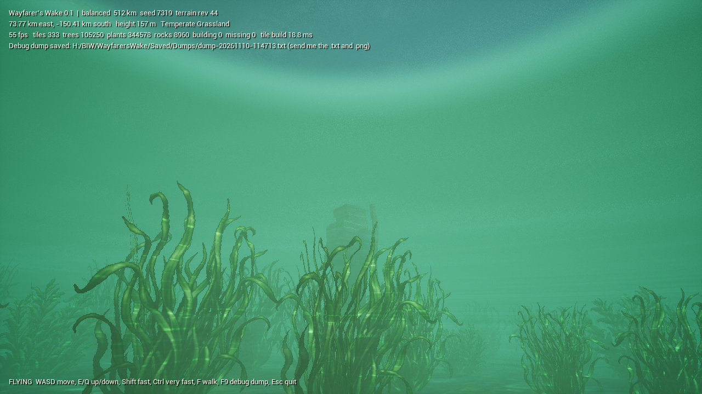
Forests on the far hills
Trees used to stop a mile out, leaving the far hills bare. Now distant woods are drawn the way Thornwake draws them, as little pictures of trees: a stepped cone for a pine, a round crown on a stick for an oak. And a change of course from Tom: the two engines draw too differently to match picture for picture, so from here the port follows what the game does, and the looks get their turn later, in Unreal's own way.
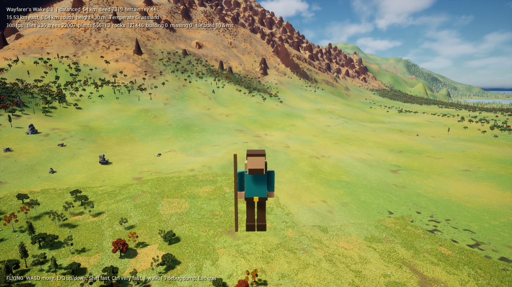
Something to do
Until today Alden could only walk, fly and swim. Now he gets hungry and cold, carries a pack, pulls long grass for fibre, and can swing his stone axe: eight blows bring a tree down, a dozen more cut the trunk into logs. These are stand-ins, as they are in Thornwake itself, where Tom added them so friends had something to do; the real crafting and building come later, designed afresh. What Tom cares about most is the feel of the place: light, sound, weather. That is where the work goes next.
Hours and weather
The world now keeps time. A day lasts three real hours, as Tom plays it; the sun's path and the length of the day come from where you stand on the globe and the season; the moon runs its month. And there is weather: fronts drift over, bringing cloud, rain or thunder, more often where the climate is wet, and snow where it freezes. Rain soaks you and wind chills you, so the weather finally matters to Alden.
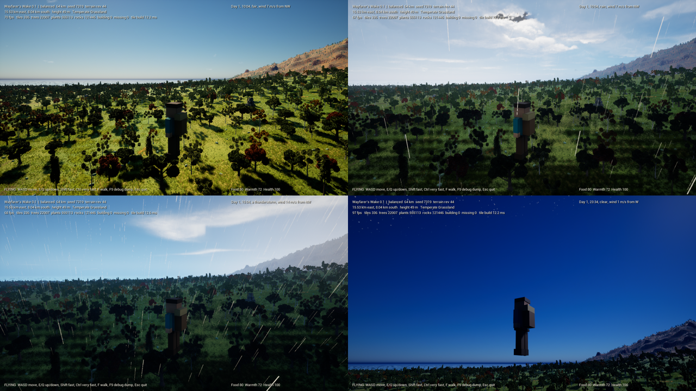
Something to hear
The world was silent; now it has a voice. Thornwake keeps no recordings: its rain, wind and thunder are worked out sample by sample, and Wayfarer's Wake now does the same sums. Rain hisses and, when heavy, roars; wind rises with the gale; thunder comes late and dull from far off, sharp from close by. New here: rivers and surf can be heard when you stand near them, and the world goes dull when your head is under water. Alden's steps and his axe make their small sounds too. It was checked by numbers, not by ear, so here is half a minute of it to judge: a breeze, rain coming on, a thunderstorm, a river, footsteps and two axe blows.
A panel of levers
Thornwake has a menu where Tom tries things: make it rain, turn the clock, jump across the map. Wayfarer's Wake now has its own. Press Esc and a panel opens over the still-running world, with four short pages. Test turns the hour, stops the clock, changes the season, calls up rain, snow, wind or a lightning strike at a chosen distance, and moves you anywhere. Sound holds the volumes. View sets how much grass and forest is drawn and how the light is exposed. World picks a new world and makes it. A search box finds any setting by name. Everything shows at once and is remembered for next time.
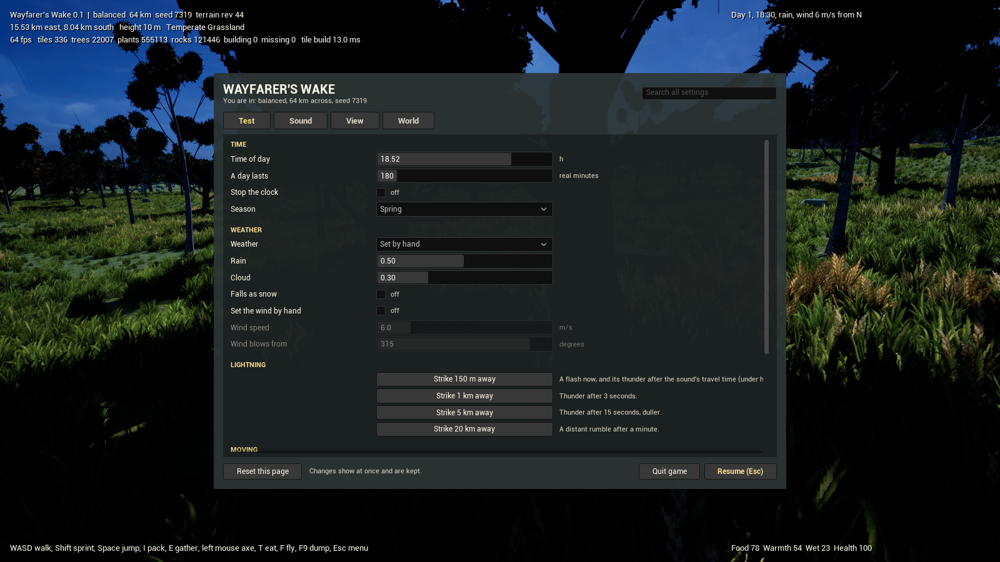
A map, twice over
Press M and the world lies flat before you. A red arrow is you, pointing the way you look. Roll the wheel to come closer, drag to move about, and right-click anywhere to be set down on that very spot. Tom asked for two looks and got them: the plain map Thornwake has, and the same world drawn as an old chart, in ink on stained parchment with a compass rose. Come in close and the map stops guessing: it draws the real shoreline, every pond and river bank, exactly as you would walk them.
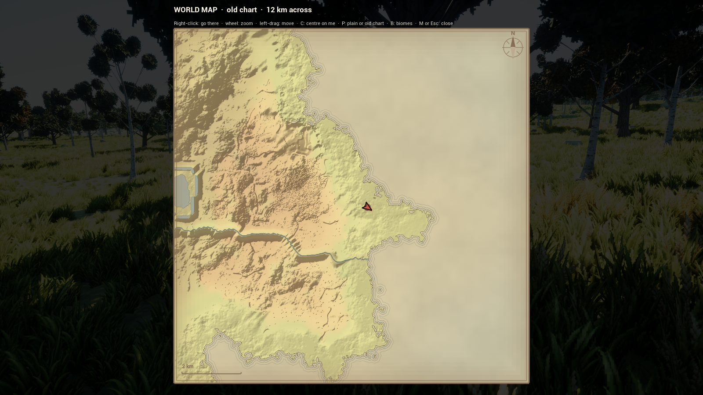
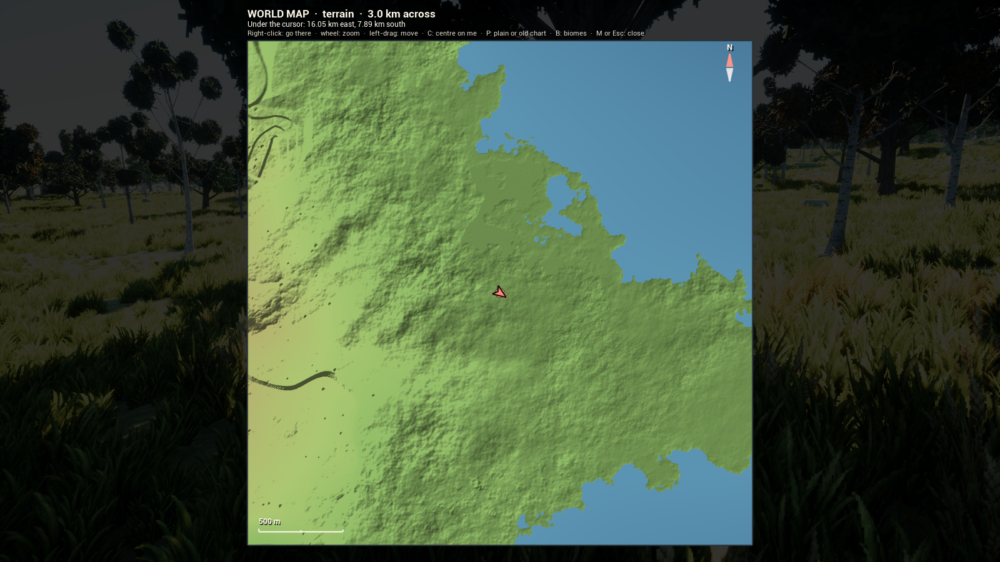
Worlds to order
The menu's World page now holds every lever Thornwake has for making a world: how many continents and islands, how tall the mountains, how many rivers and how they wander, how much forest, how warm and wet the climate, which of eighteen biomes may appear, and how common canyons, fjords or volcanoes are. Press "Preview the map" and the world those settings would make is drawn for you before you commit to it.
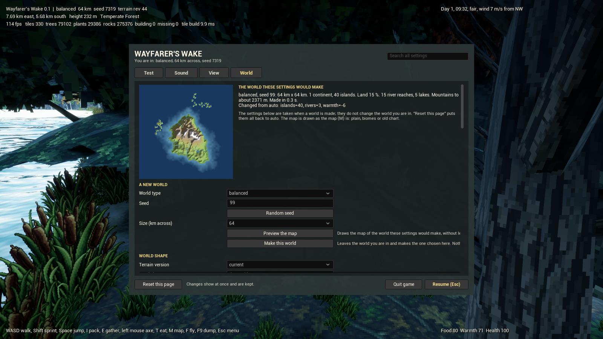
Still honest
Set beside three Godot pictures so far. The weather is Thornwake's older, simpler kind, not the moving storm systems Tom plays with; rain leaves nothing wet; the sound has been measured but not yet listened to in the game, and it comes from everywhere at once, not from where the river is; grass, trees and the sea still feel yesterday's steady breeze. The menu and the map were tried mostly by script; Tom has used the menu and found its sliders wanting, since replaced. Nobody has played the new mechanics by hand; a felled tree simply vanishes, and its trunk is a grey cylinder. Under water there is no Godot picture to compare with, and mine is probably too bright. The shadows are blacker than Thornwake's, whose leaves let light through. The sea is brighter and bluer than Thornwake's, its weather never changes (one steady breeze, one sea state), and nobody has swum in it by hand. Left out for now: the underwater view, sea stacks, distant forests as trees, rain on the ground, and the plants that had no models in Thornwake either (palms, cacti). Large rock faces shimmer in bands from far away. Fast flight drops to about 75 frames a second while trees are added and removed.